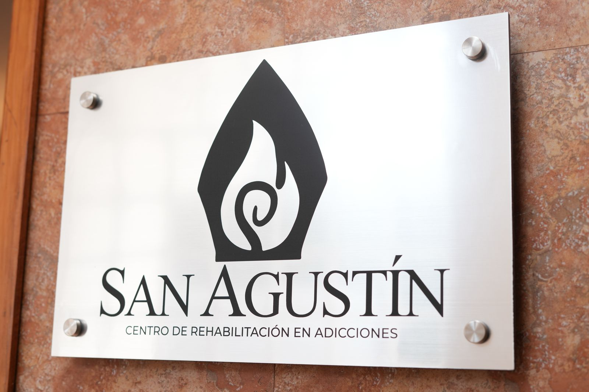
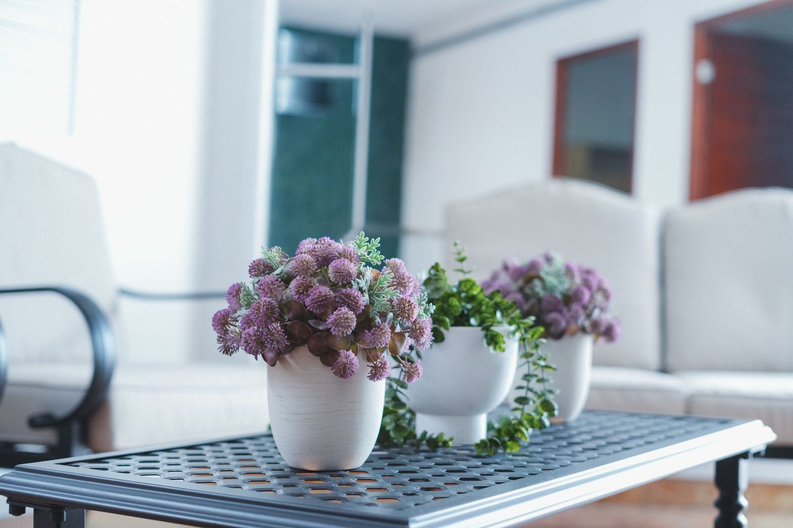

Naltrexona oral e implante
Medicamento que ayuda a reducir el deseo de consumir alcohol y bloquea los efectos de los opioides. Disponible por vía oral o como implante de liberación prolongada.
Pedir informesComenzamos una nueva etapa: te acompañamos con atención médica, psiquiátrica y psicológica mientras sigues con tu trabajo, tu familia y tu vida diaria.

Acudes a consulta y sesiones sin dejar tu trabajo, estudios ni familia.
Médico, psiquiatra y psicólogo trabajan coordinados en tu plan.
Sesiones periódicas, grupos y pruebas para medir tu avance.
Combinamos tratamiento médico y acompañamiento psicológico. Tras tu valoración, armamos contigo el plan que necesitas.
Medicamento que ayuda a reducir el deseo de consumir alcohol y bloquea los efectos de los opioides. Disponible por vía oral o como implante de liberación prolongada.
Pedir informesRetiro de la sustancia supervisado por nuestro equipo médico en la comodidad de tu hogar, cuando la valoración clínica indica que es seguro hacerlo.
Pedir informesDiagnóstico y tratamiento médico de la adicción y de lo que suele acompañarla: ansiedad, depresión, insomnio y otros trastornos.
Pedir informesSesiones individuales con psicólogo cada quince días para trabajar las causas del consumo, prevenir recaídas y sostener tus avances.
Pedir informesGrupos terapéuticos guiados por profesionales donde compartes experiencias, aprendes herramientas y encuentras apoyo de personas en tu mismo proceso.
Pedir informesPruebas de detección de sustancias con resultados confidenciales, para el seguimiento del tratamiento o para familias y empresas que lo soliciten.
Pedir informesLenguaje claro, sin estigmas. Buscamos comprensión y soluciones reales.
Tratamiento médico y psicológico para dejar o controlar el consumo de forma segura.
Desintoxicación supervisada y naltrexona para mantener la abstinencia.
Abordaje integral para cocaína, metanfetamina y otras sustancias.
Atención psiquiátrica y psicoterapia cuando acompañan a la adicción.
Sin internamiento: vienes a consulta, regresas a casa y nosotros damos seguimiento.
Escríbenos por WhatsApp o déjanos tus datos. Te escuchamos con total confidencialidad.
Evaluación médica, psiquiátrica y psicológica para entender tu situación.
Definimos contigo el tratamiento: medicamento, terapia, grupos o desintoxicación en casa.
Psicoterapia quincenal, grupos y pruebas para sostener tus avances y prevenir recaídas.
Un equipo multidisciplinario con experiencia en adicciones y salud mental.
Diagnóstico y tratamiento de la adicción y de trastornos como ansiedad o depresión.
Valoración médica y seguimiento de tu salud durante todo el tratamiento.
Psicoterapia individual y acompañamiento en tu proceso de recuperación.
Compartidas con autorización.
“Entendimos como familia lo que pasaba y cómo acompañar mejor.”
“No es fácil, pero aquí me sentí visto y respetado. Eso lo cambió todo.”
Consultorios y salas pensados para que te sientas en confianza.




No. Nuestro modelo es ambulatorio: acudes a tus consultas y sesiones y regresas a casa. Si en la valoración detectamos que necesitas otro nivel de atención, te orientamos.
Es un medicamento que ayuda a reducir el deseo de consumir alcohol y bloquea los efectos de los opioides. Se toma por vía oral o se coloca como implante de liberación prolongada. Siempre requiere valoración y prescripción médica; en el caso de opioides, primero se completa la desintoxicación.
Después de la valoración, si es seguro hacerlo, nuestro equipo médico supervisa el proceso en tu hogar con indicaciones claras, medicamentos y seguimiento cercano.
La psicoterapia individual es cada 15 días. Las consultas psiquiátricas, sesiones de grupo y pruebas se programan según tu plan de tratamiento.
Sí. Fomentamos la participación de la familia para acompañar mejor el proceso.
Sí. La confidencialidad es un pilar ético y legal de nuestro trabajo, incluidos los resultados de las pruebas antidoping.
Déjanos tus datos o escríbenos directo por WhatsApp. Te respondemos a la brevedad.